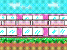

とある一室に、ばあちゃんは住んでいる。
四人部屋の仲良し三人組は、それはもう、園内中の評判だった。
誰か一人が、今日の行事には出ない、と言うと、
わしも、わたしも、とみな部屋に引きこもる。
長い髪を頭の上にちょこんと丸めたばあちゃんが二人で、
お互いに髪を結い合っている風景など、それはそれは微笑ましく。
あんまり長く一緒にいすぎたせいかもしれない。
とは、ケアスタッフの声。
段々仲良しが「仲悪し」になってきた。
うちのばあちゃんには、人の物と自分の物との区別などもうつかない。
でも、貧乏性は根っからしみついている。
そのへんにただ置いてある、ように見えるものは、
手当たり次第、自分のところに持ってきてしまう。
つまり、「泥棒」だ。
と言ったら、痴呆のお年寄りはみんな「泥棒」になっちゃうよ。
と、ケアスタッフに言われた。
同室の仲良しばあちゃんが、ばあちゃんのそんな「痴呆症特有の」行動を目にした。
ほかのことに紛れて、誰も何も忘れたころ、
同室のばあちゃんがふと思い出して、うちのばあちゃんを罵った。
ちょっと前のことなどすっかり忘れているばあちゃんからすれば、身に覚えがない。
その繰り返しが、沸騰し始めたころ、ちょうど見舞いに行って、
二人の言い争いを耳にし、目にした。
端的に言うと、内容はともあれ、二人ともかなり正気だった。
どんなにぼけていても、
身に覚えのないことで罵られたり、人が不正な行為をしているのを目撃したり、
といったような、
「自分が自分であること」というところに大きく関わる問題となると、
人は「正気」になるのかもしれない。
ばあちゃんが「泥棒」？ ということと、仲良しグループ解散？ ということと、
ぼけてもなお自己防衛本能はなくならないのか？
自己防衛のためには、あれほど激しい罵り合いもするのか？ ということなどで、
なんだか、暗然たる気持ちになって、長い道中帰宅の途についた。
１２月現在、二人は部屋が別々になっている。
今度クリスマス会がある。 なごやかならいいんだけれど。
(GIF/24K)
風邪見舞いに行ったときも、ロビーに、三人組のうちの二人が座っていて、
わたしの顔を見るや、
ああ、おばあちゃんのところに来たのかい？ ありがとうねぇ。
と、いつものように、挨拶をしてくれた。
別室になった人は、食堂などで会うときは、
うちのばあちゃんとも仲良くしているそうだが、
自分の部屋に戻り、一人になると、ぶつぶつ言い始めるらしい。
なぜ苛々しているのか、もう分かってはいない。
具体的な原因は忘れてしまっても、「恨み」だけが残るのだそうだ。
くわばら、くわばら、Shockwave、もう用意してあります？
| そぎゃんことのあったかねぇ。 | 年中行事はもう見んでよかね？ |
| 最初のメニューに戻りたか。 | もう帰ると？ まだ早かよ。 |
しつこかぁ、思うかもしれんばってん、
なんか、思うこつのあったら、 あったらでよかよ、
電子メールばくれんね。